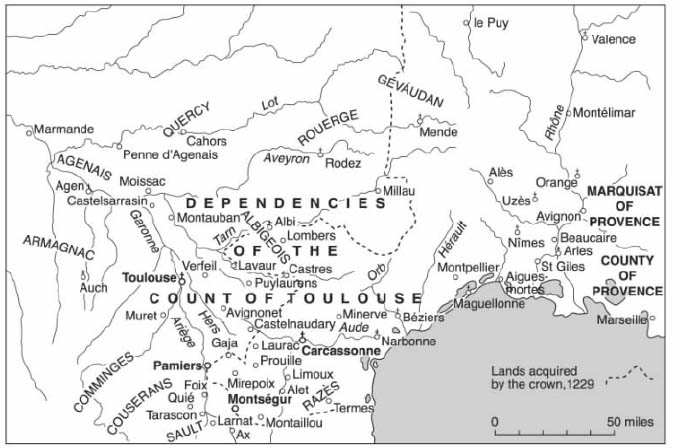
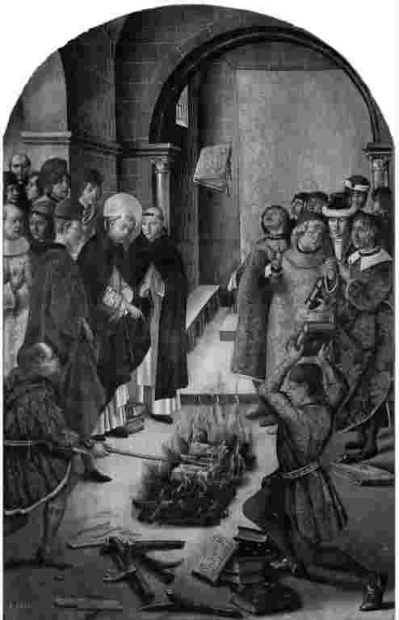

这是一个真实的故事。1301年，吉扬·德·罗兹从比利牛斯山 [1] 的塔拉斯孔村匆忙赶往法国南部的帕米耶镇。他是去拜访他的哥哥雷蒙，当地多明我会 [2] 修道院的一位修道士。这趟行程沿阿列日河谷至少有三十公里，吉扬徒步行走，至少要花一天时间才能到达目的地。不过他此行的原因很紧急：他的兄弟送来一封信，警告说他们两人都处于巨大的危险之中。他必须马上赶过去。
来到帕米耶的修道院，他的兄弟道出了令人恐惧的消息。雷蒙告诉他，最近某个居士（一种不属于任何正式宗教机构的准修道士）造访了修道院。他叫吉扬·德让，对兄弟二人构成了真正的威胁。德让显然为多明我会捉拿两名异教徒——皮埃尔·奥捷和吉扬·奥捷——提供了帮助，他们活动于比利牛斯山的蒙塔尤村。德让知道这些异教徒是因为一个住在高处山村的人，此人曾为德让提供住宿过夜，并天真地把德让介绍给这些异教徒，指望德让会接受他们的信仰。德让见到了奥捷一家并赢得了他们的信任，现在他要背叛他们。
但真正让雷蒙害怕的是，德让还声称异教徒在多明我会内部有一名奸细。居士说，这名奸细通过他的兄弟——一个普通信徒，也是奥捷一家的朋友——与异教徒发生关联。这个兄弟就是吉扬·德·罗兹，被指认的奸细就是雷蒙·德·罗兹。“这是真的吗？”惊恐的雷蒙问道，“你和异教徒们有联系吗？”“不，”吉扬·德·罗兹回答说，“居士在说谎。”
这句话本身就是一个谎言。吉扬·德·罗兹在1298年春天与这些异教徒初次相遇。他听他们布道，为他们提供食物和住宿，事实上也和他们有联系：他们是他的舅舅。奥捷一家最近从伦巴第 [3] 回来，此前他们一直在为阿列日河一带的小村镇做公证人。他们在伦巴第皈依了纯洁派 [4] 信仰，这种信仰13世纪曾盛行于法国南部，但近年来已在宗教法官的关注下逐渐消亡。皮埃尔·奥捷和吉扬·奥捷想要让它复活。
纯洁派是基督教的一种异端。纯洁派信仰者称自己为“忠诚的基督教徒”，相信自己是门徒使命的真正继承者。他们还相信存在两个上帝：一个好上帝，他创造了灵魂；一个坏上帝，他创造了一切有形之物。这种“二元论”信仰与罗马天主教正统恰恰相反。无论如何，纯洁派教徒相信罗马天主教会是腐败的——他们称其为“巴比伦的妓女”。13世纪早期，法国南部有数千名纯洁派教徒和更多的信仰者。但到14世纪早期仅有十四名纯洁派教徒幸存下来，他们大多藏匿在比利牛斯山的村子里。即便如此，这样的信仰仍不能见容于正统的宗教力量。因此，帕米耶的多明我会才急于利用这个机会抓住奥捷一家。也因此，吉扬·德让才使德·罗兹兄弟面临危险。
吉扬·德·罗兹告别自己的兄弟，返回比利牛斯山里的家中。他先来到阿克斯村（离塔拉斯孔又有三十公里），提醒雷蒙·奥捷（那些异教徒的兄弟）提防德让。回到本村后他又警告了一个叫吉扬·德·阿雷亚的人，此人住在邻近的基耶地区。我们不清楚，他是不是在这个时候策划了随后发生的那些事件。
吉扬·德·阿雷亚是纯洁派教徒的积极支持者。他立刻找到居士德让，问他是否正在寻找奥捷一家。德让回答说“是的”，于是吉扬·德·阿雷亚表示能带他找到他们。居士很高兴，毫不怀疑地答应了。他们一起来到深山中的拉纳特村。
当晚迟些时候，吉扬·德·罗兹听说当居士走到拉纳特村外的小桥上时，出现了两名男子：菲利普·德·拉纳特和皮埃尔·德·阿雷亚（吉扬·德·阿雷亚的兄弟）。发生的事情是这样的：
这起谋杀被隐瞒了许多年。吉扬·德·罗兹、雷蒙·德·罗兹和奥捷一家暂时安全了。
是什么让我们知道这起被遗忘已久的谋杀案的呢？它被记录在1308年的宗教审判簿中，当时吉扬·德·罗兹供认了他所知道的异端和异教徒。另有三名证人重述了这一事件。因为与纯洁派教徒有染，吉扬和其他六十人一道被判入狱。这一事件如同一幅神秘而诱人的小插图，从14世纪为我们留存至今。那么这就是“历史”：很久以前发生的一个真实故事，如今被重新讲述。过去再次复苏，当时与现在之间不对等的联系被重建。历史学家是否可以就此卸下他（她）的责任？这本历史学导论可以就此结束了吗？
别这么快结束我们的旅程。关于吉扬·德让谋杀案还有一些悬而未决的问题，就一般历史而言也还有些问题有待探询。本书将要表明，书写历史的过程（“历史编纂”）疑问丛生。我们可以从第一章开始审视这些问题，其中有些也许已经跃入我们的脑海。在许多方面，历史始于问题也终于问题；也就是说，历史永远不会真正地结束，历史是一个过程 。
语言会让人迷惑。“历史”常常既指过去本身，也指历史学家就过去所写的内容。“历史编纂”可以表示书写历史的过程，或者对这一过程的研究。在本书中，我用“历史编纂”表示书写历史的过程，用“历史”表示这一过程的最终成果。我们会看到，本书认为在“历史”（在我所使用的意义上）与“过去”之间存在着本质的差别。
那么，上述故事是怎样被记载下来的呢？这里有几种不同的答案。我们可以从最简单的开始。1308年，吉扬·德·罗兹四次出现在一位名叫若弗鲁瓦·达布利斯的宗教法官面前。达布利斯得到教皇授权，前来调查比利牛斯地区的异端教派。他被允许要求每个人（任何人）前来回答关于正统信仰的问题，要求他们供认自己的以及他人的活动，无论是活着的还是死去的。听完他们的供词后，法官可以迫其苦修或施以惩罚，惩罚方式从戴上黄色十字架以示曾犯有异端罪行，直至在火刑柱上被活活烧死。

图1 中世纪朗格多克（法国西南部）的城镇和村庄。吉扬·德让的尸体大概就躺在拉纳特村以南。
将吉扬·德·罗兹牵连进来的调查最初是由他的另一个兄弟热罗·德·罗兹引起的，他主动找到宗教法官，指认了许多与纯洁派有染的人。他的供词、吉扬的供词和其他至少十五人的供词，都被记录在宗教审判簿中。证人们回答达布利斯提出的特定问题，并补充某些他们自己的材料；他们的回答由法官的抄写员记录下来，然后存放起来以备日后使用。这些登记簿有一部分留存至今，所以他们在14世纪的谈话仍能为我们所知。这一独特的登记簿由一位现代历史学家编辑、印刷出来。我利用其中的某些资料，让你知道了吉扬·德让的故事。
不过，问题到这里并未结束。下一章我将进一步谈论证据，说说它的用途和存在的问题。现在还是回头看看这个故事吧。我希望它引起了你们的关注。我选择这个故事，是因为它的确引起了我的关注。它吸引我们，也许是因为它是一起谋杀案，而我们都很熟悉在共享恐怖故事时的那种犯罪的愉悦。它无疑还是一个“故事”，因为它有开头、中间和结尾，这使它更加“令人满意”。如果我们以前不知道中世纪的人们从事这种活动，它也许会让我们产生兴趣、感到惊讶。故事中的人不是国王、王子、圣徒或著名作家，他们是寻常百姓，因此，我们也许会很欣喜地发现自己对他们竟然知之甚详！
这个故事吸引我们，也许还因为其中的奇特之处。曾有人（作家L.P.哈特利 [5] ）提出“过去是一个异邦，在那里他们的行为方式全然不同”。科幻小说作家道格拉斯·亚当斯 [6] 持有相反的假设：过去的确是一个异邦，他们的行为方式就像我们一样。在这两种看法之间存在着难以捉摸的地方，它吸引我们关注过去，推动我们去研究历史。上面讲述的故事同时证明了这两种观点。对于送信件、走亲戚、离开家乡去旅行，我们能够理解并产生共鸣。即使我们没有亲身经历过，我们也了解对迫害的恐惧，了解谋杀。如果我把当事人的姓名翻译成你们本国的语言（“吉扬”会变成英语中的“威廉”），他们看起来会离我们更近。我所用的姓名来自奥西坦语，这是那个时代和那段时期的语言。其实我在这里略有误导，这些记录是用拉丁文写的，所以或许我本该采用拉丁语，把名字写成吉尔默斯。
但这些名字对我们来说还另有奇特之处。看到这么多人都叫吉扬似乎有些古怪，我们通常不会用出生地作为自己的姓（“德·罗兹”的意思是“叫罗兹的地方”）。我们了解宗教，但也许不熟悉异端的概念、宗教审判的程序，以及两个上帝的信仰。我们是否该把这个看作是一种稀奇古怪的“迷信”呢？或者它并不比上帝之子降临尘世、死在十字架上然后又复活的想法更奇怪？“异端”只能存在于有一个“正统”来定义它的地方：中世纪的天主教徒和纯洁派教徒都自认为是“真正的”基督徒。不管我们现在的哲学和宗教信仰是什么，我们能否声称和这两个群体都有真正的联系呢？
如果阅读更多的记录，我们还会遇到另一些不同的要素。虽然吉扬·德·罗兹和他的兄弟显然能读能写（他们通过书信交流），他们在当时却实属例外：当时大多数人本来没有那么多识字的机会。实际上，“识字”的概念在14世纪与现在相比是很不相同的：如果你被说成是litteratus（“识字的”），这就意味着你能读写拉丁文 ，并且知道怎样解释经文。掌握本国语言不能算作“识字”，无论这种能力多么有用。只会读写奥西坦语（或者德语、法语、英语等等）仍会被归入illiteratus（“文盲”）之列。这些熟悉的或陌生的要素会引发更多的问题。
吉扬·德让谋杀案并非宗教审判簿中记录的唯一事件。它显然不是1301年发生在比利牛斯、法国南部、欧洲或者整个世界的唯一事件。历史学家无法讲述来自过去的每一个 故事，而只能是其中的一部分。现存的资料多有残缺（达布利斯的登记簿中有几页已经遗失了），还有些地区没有留下任何证据。但即便就我们拥有的证据而言，仍有许多可 说之事，远远超出了本书的篇幅。历史学家总要判定哪些事情是可以说或者应该说的。所以“历史”（历史学家所讲的关于过去的真实故事）不过是由那些引起我们注意的事情构成的，我们决定为现代听众复述这些事情。我们在下一章将会看到，历史学家选择他们的真实故事的依据，已随时间推移而发生了变化。
在把德让谋杀案作为一个打算复述的故事挑出来之后，我们还需要确定它在一幅更大的图景中扮演什么角色。一个现代历史学家仅仅呈现上述这样一幅小插图而不多说些什么，是不太寻常的。在19世纪晚期和20世纪早期，有些历史学家就是这样工作的：搜集和翻译他们认为能够吸引更多读者的有趣证据。这些著述是有用的宝藏，引领其他历史学家展开了细致的研究。它们可以带来一种阅读的愉悦，唤起读者对过去的热情。

图2 圣多明我与纯洁派异教徒（右）的斗争。书被扔进火里：异端的著作被烧毁，正统的文本却奇迹般地升到空中。在现实中，圣多明我不是一位宗教法官（虽然他的一些信徒后来是），但火刑仍然是对冥顽不灵的异教徒的最后惩罚。（佩德罗·贝鲁格特，15世纪晚期）
但对大多数现代历史学家来说，仅此是不够的。我们需要解释 过去，而不仅仅是呈现过去。找出故事的更宏大的背景，就是为了不仅仅说出“发生了什么”，而且要说出它意味着什么。
我们能把德让谋杀案的故事置于何种宏大图景之中呢？存在几种可能性。最显而易见的是，这些记载与更广阔的历史背景——宗教审判和异端——相关。它向我们呈现具有纯洁派信仰的当事人，他们的行为与信仰。它告诉我们纯洁派自身的历史：阅读达布利斯的登记簿，我们能发现有多少人被异教徒奥捷一家改变了信仰。我们能注意到人们在供词中不说“宗教法庭”，而只说“法官们”。这是因为当时“宗教法庭”并未作为一个机构而存在，只有个别的法官（就像若弗鲁瓦·达布利斯那样）有特殊的工作要做（对达布利斯来说就是调查比利牛斯地区村庄里的异端）。“宗教审判”指的是达布利斯和其他人所遵循的法律程序。它是在13世纪早期作为一种与异端斗争的手段而创建的。达布利斯的登记簿还向我们展示了宗教审判的程序——怎样着手对异端进行调查和记录——从那时起是如何演变的。如果把吉扬·德·罗兹的供词与13世纪40年代的一份供词加以比较，我们会发现，和早期宗教审判时的证人们相比，吉扬被鼓励谈论得更多、更详细。这是因为异端造成的威胁发生了变化，法官们考虑的事项也随之而变。
或者，我们可以把德让谋杀案放到犯罪的历史中去。中世纪还有另一些关于谋杀的记载，其中有些非常著名。我们可以把这个故事与1170年谋杀托马斯·贝克特 [7] 、1304年处决威廉·华莱士 [8] ，或者英王理查三世 [9] 被指控的罪行相比较。我们还可以聚焦下层社会的犯罪行为，利用其他类型的法庭记录探究这些行为，进而讨论中世纪暴力的盛行、犯罪的方式、调查和惩罚，以及罪犯的动机。不过，这个故事又能在朗格多克 [10] 的历史中扮演一个角色。“朗格多克”的意思是“奥克（Oc）地区的方言（或语言）”，这是人们对这个法国南部地区的称呼，因为当地居民用oc这个词表示“是”，而不是像北部那样用oui。由于朗格多克有异端存在，教皇在13世纪早期下令讨伐该地区。在此之前朗格多克几乎是一个独立的国家，在情感上与加泰罗尼亚 [11] 而不是巴黎周边地区更加亲密。对异端的讨伐导致了法国北部对南部的政治控制。很久以后朗格多克才接受新的政治主人，而且在某些方面，法国南部仍然认为自己和巴黎人的北方很不一样。纯洁派的抵御（或许包括对德让的谋杀）是与法国政治史紧密联系在一起的。
最后，我们还可以忽略故事的叙述，而去关注它的细枝末节。我在前面提到了识字的问题；这对关注普通信徒知识水平的历史学家来说可是有用的矿藏。德让是在拉纳特村外的桥上遭到袭击的；阅读登记簿中更多的记录，我们会发现塔拉斯孔村外也有一座桥，别的村庄也是如此。这告诉了我们当地的某些地理知识。吉扬·德·罗兹在供词的另一处提到，他曾经把异教徒藏在“地板下面一个用作粮仓的地方”。还有一次，异教徒待在塔拉斯孔村附近田地上吉扬的一间棚屋里。由此我们可以了解农业和建筑方面的东西。吉扬还曾提到自己有事前往阿克斯村，提到他曾和富瓦伯爵一起离家接受军事训练。这样，我们就对吉扬的活动以及他所属社会阶级里的其他人知道得更多。对于他所招认的事件，吉扬常被要求给出日期。他通常会提到圣徒的纪念日，比如说“施洗者圣约翰节之后的十五天”（六月的某一天）。这给了我们一个印象：吉扬如何理解时间的流逝，圣徒对于即便是同情异端的人有多重要。要是在其他宗教审判记录中继续挖掘矿藏，我们会收集到许多这类有用的信息。吉扬的供词周围有一个完整的世界，这个对他来说是理所当然的世界以撩人的碎屑和片断展现在我们面前。
这是我所想到的一些画面，作为德让谋杀案故事可能的背景。别的读者会想到另一些事情。我们将进一步看到，其他时代的历史学家会以不同的方式解释这个故事。有些人根本不会认为它重要或者诱人。这些选择不仅与运气或聪明有关，而且关系到是什么在吸引 我们。作为历史学家，我们沉醉在关于世界如何运行，人们为何要做他们所做之事的种种兴趣、道德、伦理、哲学和观念之中。记录的证据呈现在我们面前，伴随着画面和谜团，事实上还有挑战。吉扬·德·罗兹没有对故事中的每一个细节都做出解释。例如，证据没有告诉我们，为什么修道院里没有人对他的兄弟提出质疑，吉扬·德让的动机究竟何在（他是一个虔诚的正统派信徒，还是希望得到多明我会的认可），究竟是什么促使吉扬·德·阿雷亚及其同谋将德让扔进黑暗的岩石洞穴（他们是要保护奥捷一家，还是保护他们自己）。我对这些事情有些想法，但它们是我的 想法。在本书后文，我们会进一步谈到历史学家如何填补这些空白，以及合理猜测的艺术。
“猜测”暗示着历史编纂过程具有某种程度的不确定性。它甚至还暗示着历史学家有时会把事情弄错。当然，他们的确会出错：历史学家就像任何其他人一样，会读错、记错、曲解或误解。但在更广泛的意义上，历史学家总是 把事情弄“错”。这首先是因为我们永远无法使之完全 “正确”。每一种历史记述都有缺漏、问题、矛盾和不确定之处。我们会弄“错”，还因为我们相互之间总是无法达成一致；我们需要以自己的方式弄“错”（虽然我们将会看到，我们有时会依据解释事物的不同方式而形成不同的群体）。不过，在把事情弄错的同时，历史学家总是试图 使之“正确”。我们试图坚持那些被我们自己视为是证据实际所说的内容，我们想要搜寻一切可用的资料，充分理解发生的事情，我们从不虚构“事实”。历史学家有时喜欢将自己的工作与文学区别开来。一个小说家可以创造人物、地点和事件，而历史学家则要受制于证据所支持的东西。这种比较会让历史显得有些枯燥和无趣。然而，正如我们已经看到并将继续探讨的那样，在处理、呈现和解释证据的时候，历史也伴随着想象。对每一个历史学家来说，到底发生了什么——以及它可能意味 着什么——很成问题。这些抓住“真相”的危险尝试令人激动，但真相随时都可能被发现是幻影。
这些怀疑对于“历史”的存在是必不可少的。如果过去没有缺漏和问题，历史学家就没有任务可完成了。如果现有的证据总是坦率、诚实、清晰地对我们发言，那么不仅历史学家将没有工作可做，我们也将失去相互论辩的机会。历史首先是一种论 辩 。它是不同历史学家之间的论辩，也许还是过去与现在之间的论辩、实际发生之事与即将发生之事之间的论辩。论辩是重要的，它们创造了改变事物的可能性。
由于这些原因，我在本章和本书里始终用“真实的故事”这个说法来谈论历史。这里存在一种必要的张力：历史是“真实的”，因为它必须与证据即历史涉及的事实相一致，否则它就必须表明为什么这些“事实”是错误的，需要修正。与此同时，历史又是一个“故事”，因为将这些“事实”放到了更广阔的背景或叙事之中，它就是一种解释 。在尽量说服你（和他们自己）相信某些事情这一意义上，历史学家是在讲故事。他们的说服方式不仅包括诉说“真相”——不虚构事实、不提交与事实相左的材料，而且包括创造关于过去的有趣、连贯而有用的叙述。过去本身不是一段叙述。整体而言，过去就像生活一样无序、混乱、复杂。历史就是要弄清这种混乱的意义所在，从旋涡中发现或创造模式、意义和故事。
我们从一系列问题开始，我也提出了一些看法：历史是一个过程、一种论辩，是由关于过去的真实故事所构成的。我们将在本书的以下章节展开更充分的讨论。不过还有最后一个问题：想想历史（像我们正在做的那样）带给我们的机会和危险。它使我们有机会反思自己与过去之间的关系，审视我们挑出来讲述的过去故事的种类、我们回想起那些故事的方式以及讲述那些故事的效果 。当过去重新进入现在，它就成了一个强有力的所在。思考“历史”，部分是要思考历史是为了 什么——或为 了 谁。要开始探究这个问题，我们就会发现回顾过去、尝试理解在过去“历史”是什么将会有所帮助。